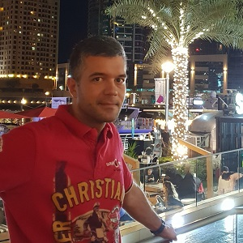

| 
|
Yaroslav Zadesenets
Tel.(IE):+353897068836
Tel.(UA):+380679284702
E-mail.: zadesenets.yaroslav@gmail.com
|
Skills
|
Java, Html, CSS. An experienced user Windows, MacOS, Microsoft Office, Adobe Photoshop, 1C:Accounting.
|
|
Experience
|
2016-2022
Head of the public organization "Association of Greens of Ukraine" https://ua-green.org
- Creation and management of a public organization;
- identification and assistance in solving the environmental problems of Ukraine.
2012-2022
Self employed. Restaurant manager.
- Planning, creation and starting a restaurant business;
- operational management of the restaurant.
2008 - 2011
Deputy General Director of LLC "Invest-Inform". Organizer of the "First Kyiv Business Forum".
- Development of the concept of the forum;
- organization of the forum, work with forum participants.
2005-2007
Head/manager of the advertising department of CJSC "Svit Electroniki"
- Ensuring the advertising process of the organization;
- development and implementation of advertising, marketing and PR strategies of the company;
- launching new brands on the market, brand management.
2004-2005
Advertising Department Manager, Advertising International Agency LLC
- Development of layouts and control of the production of promotional products;
- media planning.
|
|
Education
|
1999-2004
Taras Shevchenko National University of Kyiv. Bachelor's degree in enterprise economy
Certificates
2008 - Business Forum "Innovative Marketing Communications: Tools and Technologies"
2008 - International Branding Forum "Brandspoint 2008: 100% Branding. Best practices"
2008 - Seminar of the NCPBPU "Organization and conduct of sales of banking products"
2001 - PR Fundamentals Courses
|
|
Additional Information
|
Soft skills: responsibility, punctuality, organizational qualities, sociability, stress resistance.
Hobbies: chess, Japanese classical literature.
Languages: English - Upper intermediate, Ukrainian - Native, Russian - Native.
|
|